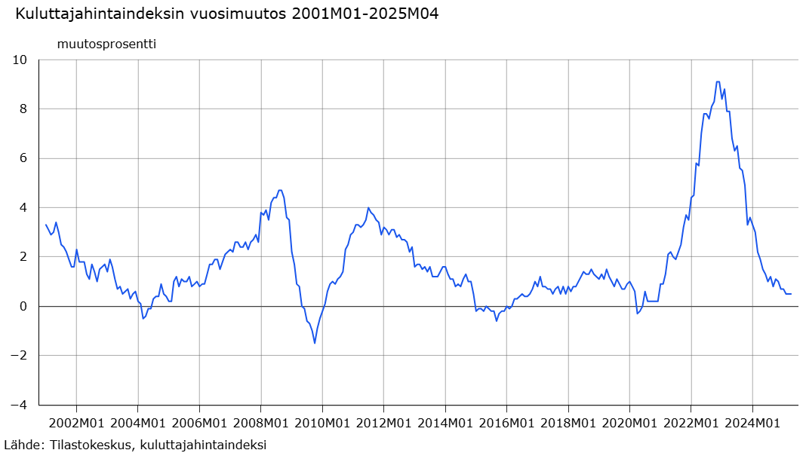

16 Aineisto- ja tutkimustyypit ja koeasetelmat
Tässä luvussa käsitellään erilaisia tapoja toteuttaa tilastollista tutkimusta. Empiirisen tutkimuksen lähtökohtana on aina tutkimusongelma, joka sisältää kysymyksen tai kysymyksiä, joihin tutkimuksella haetaan vastauksia. Tilastotieteen näkökulmasta tutkimusongelman keskiössä on aineisto, data, ja se miten käytettävissä olevasta aineistosta saadaan vastauksia tutkimuskysymyksiin.
Tarkastelemme tässä luvussa myös tutkimuksenteon käytäntöä käsittelemällä erilaisia aineistotyyppejä.
- Käymme läpi eri alojen ja tutkimusongelmien käytännön tutkimustyössä kohdattavia aineistoja ja erittelemme pidemmälle eri tutkimuskysymysten käytännön haasteita aineistojen osalta sekä sitä, minkälaisia ongelmia erilaisiin tutkimusykysymyksiin käytännössä liittyy ja miten eri tutkimusasetelmat pyrkivät niitä ratkomaan.
Aineistotarpeen ja sen analysoinnin lähtökohdat määrää tarkempi tutkimusongelma.
- Tutkimus voi olla esimerkiksi kuvailevaa, vertailevaa, selittävää tai kokeellista ja aineistolle sekä menetelmille asetetaan kussakin tapauksessa erilaiset vaatimukset ja odotukset.
Erilaisiin tutkimuskysymyksiin ja niihin vastausta etsiviin koeasetelmiin liittyvien esimerkkien avulla pyrimme löytämään vastauksia esimerkiksi seuraaviin kysymyksiin:
- Miten tilastotiede liittyy tiedon keruuseen?
- Miten aineisto generoituu?
- Millaisiin kysymyksiin saadaan kussakin asetelmassa vastauksia?
Tässä luvussa käsiteltävät asiat kuuluvat tilastotieteelle ominaisesti kvantitatiivisen tutkimussuuntauksen alaisuuteen. Luvussa esiteltävät karkeat tutkimustyyppien ja aineistojen jaot ovat vain yksi jaottelutapa ja todennäköisesti poikkeaa eri oppikirjoissa ja lähteissä esitetyistä.
Tässä luvussa tarkastellaan myös erilaisia tutkimusasetelmia ja niiden mukaisia aineistotyyppejä. Erilaiset tutkimusasetelmat johtavat erilaisiin aineistotyyppeihin, jotka voidaan jaotella karkeasti kolmeen eri tyyppiin:
- Poikkileikkausaineisto: havaintoaineisto kattaa yhden ajankohdan ja mahdollisesti useita tilastollisia muuttujia
- Aikasarja-aineisto: havaintoaineisto kattaa vain yhden tilastollisen muuttujan mitattuna useana ajanhetkenä
- Paneeli- ja pitkittäisaineisto: havaintoaineisto kattaa mahdollisesti useita tilastollisia muuttujia mitattuna useana ajanhetkenä
Eri tutkimusstrategiat hyödyntävät eri aineistotyyppejä sen mukaan, miten ne sopivat tutkimuskysymykseen ja valittuun menetelmään. Tarkastellaan seuraavassa siis miten tutkimusstrategiat eroavat ja minkälaisia tutkimustyyppejä-, asetelmia- ja aineistoja näihin kuuluu.
16.1 Tutkimustyypit
Tarkastellaan ensin erilaisia tutkimustyyppejä yleisellä tasolla. Erilaiset tutkimukset voidaan karkeasti jakaa (ainakin) neljään eri luokkaan:
kuvaileva,
vertaileva,
kokeellinen ja
havainnoiva tutkimus.
Kuvaileva tutkimus
Kuvaileva tutkimus
- Tarkoituksena on kuvata jonkin ilmiön, tilanteen tai tapahtuman luonnetta, yleisyyttä, historiallista kehitystä tai muita tunnuspiirteitä mahdollisimman todenmukaisesti ja tarkasti.
- Keskeistä on uuden tiedon lisääminen ja pyrkimys vastata kysymyksiin mitä, millainen tai miten.
- Yleisesti ottaen kuvaileva tilastollinen tutkimus perustuu aineistosta lasketuille tunnusluvuille, jotka kuvaavat aineiston ominaisuuksia. Esimerkkeinä toimivat keskiarvon lisäksi sen kaltaiset keskimääräistä havaintoa mittaavat suureet, kuten mediaani ja moodi, tai vaihtelua kuvaavat eri muuttujien vaihteluvälit ja keskihajonnat.
- Saadakseen luotettavia tunnuslukuja, tulee otoksen olla edustava ja havaintojen luotettavia ja päteviä eli saatujen mittausten pitää kuvata kohteena olevaa ilmiötä ilman virheitä.
- Kuvailevassa tutkimuksessa ei tutkita muuttujien välisiä yhteyksiä tai riippuvuksia eikä täten yleensä tehdä jakoa selittäviin ja selitettäviin muuttujiin vaan muuttujat ovat asetelmallisesti samantasoisia.
- Kuvailevassa tutkimuksessa ei välttämättä testata hypoteeseja, ei tehdä ennusteita, ei anneta selityksiä tai pohdita seurauksia: kyseessä on vain aineiston kuvailua ilman sen merkityksellisempää sisältöä kuten havaintojen taustalla olevien ilmiöiden tutkimista tai perusjoukon ominaisuuksien päättelyä otoksen perusteella.
Vertaileva tutkimus
Vertaileva tutkimus
- Vertaileva tutkimus voidaan jakaa kahteen luokkaan
- Ryhmäeroja selittävään tutkimukseen
- Korrelaatiotutkimukseen
- Ryhmäeroja selittävässä tutkimuksessa pyritään selvittämään, mitkä tekijät liittyvät tutkittaviin ilmiöihin, jotka aiheuttavat ryhmissä ilmeneviä eroja.
- Korrelaatiotutkimuksissa pyritään löytämään ilmiöiden välisiä yhteyksiä tutkimalla kohdejoukkoa kokonaisuutena, jolloin mitattavien muuttujien joukkoon otetaan selittäviä muuttujia.
- Selittäviä muuttujia hyödynnetään molemmissa luokissa. Niiden avulla pyritään löytämään yhteyksiä verrattavien kohteiden välillä ja niiden voidaan ajatella olevan myös mahdollisia syitä selitettäville muuttujille.
- Syy-seuraussuhteita ei kuitenkaan vertailevassa tutkimuksessa pohdita, ts. vertaileva tutkimus ei ole suoranaisesti kiinnostunut kohteena olevien ilmiöiden/ryhmien vertailussa löydettyjen erojen syistä vaan mielenkiinnon kohteena on kys. erot itsessään.
- Vertailevaa tutkimusta tehdessä on tarpeen pohtia:
- Miksi jotakin tutkimuskohdetta vertaillaan eli mitä tutkimuskohteesta halutaan nimenomaan saada selville.
- Mitkä ja minkälaisia tilastoyksiköitä vertailuun kannattaa ottaa mukaan, jotta tutkimuksen tavoitteet saavutetaan.
- Tyypillistä se, että kontrolli on puutteellista ja ns. väliin tulevia muuttujia ei voida aina eliminoida.
- Tutkimuksessa on hyväksyttävä myös muuttujiin liittyvä luonnollinen vaihtelu.
Kokeellinen tutkimus
Kokeellinen tutkimus
Kokeellisessa tutkimuksessa tarkastellaan syy-seuraussuhteita olosuhteissa, joissa tutkija pystyy kontrolloimaan tutkimusyksiköihin vaikuttavia tekijöitä, eli niin sanottuja käsittelytekijöitä (tai interventioita). Tavoitteena on varmistaa, että riippuvaan muuttujaan vaikuttaa vain tutkittava käsittelytekijä, jolloin muiden muuttujien vaikutus voidaan sulkea pois.
- Kvasikokeellisessa tutkimuksessa kontrolli ei ole yhtä tiukka: esimerkiksi koehenkilöiden satunnaistaminen ryhmiin ei välttämättä ole mahdollista. Tällöin tutkimusasetelma muistuttaa kokeellista tutkimusta, mutta altistuu suuremmalle riskille, että muut tekijät vaikuttavat havaittuihin tuloksiin.
Tavallisesti kokeellisella tutkimuksella viitataan sellaiseen tutkimukseen, jossa aineiston on kerätty valvotussa ja kontrolloidussa ympäristössä, kuten laboratoriossa tai sairaalan koehuoneissa, jotta mittaukset ja käsittelytekijät on tutkimuksen tekijän puolesta kontrolloitu ja täten halutunlaisia.
- Tutkimusasetelman kontrollointi vähentää mittauksiin ja käsittelytekijöihin liittyvien virhelähteiden mahdollisuuksia ja täten jättää vähemmän sijaa epäilyksille.
- Lisäksi tutkimuksen toistettavuus ja objektiivisuus paranevat, kun koejärjestelyt tehdään tarkasti ja huolellisesti.
Kokeellisilla tutkimuksilla on mahdollista päästä kausaalipäätelmiin muuttujien välisistä syy-seuraussuhteista.
Kokeelliset tutkimukset tuottavat yleensä nopeammin riittävään näyttöön perustuvaa evidenssiä kuin havainnoivat tutkimukset.
Kokeellinen tutkimusasetelma ei kuitenkaan ole mahdollinen kaikissa tilanteissa!
Esimerkkejä ja pohdintaa. Esimerkiksi erilaisten politiikkatoimien arvioimisessa olisi hyödyllistä, mikäli se voitaisiin satunnaisesti kohdistaa esimerkiksi vain osaan kansasta tai kunnista.
Tällaisten kokeilujen ehdotukset ovat kuitenkin usein kaatuneet joko perustuslaillisiin ongelmiin tasavertaisesta kohtelusta tai muihin lainsäädännöllisiin ongelmiin tai niitä ei ole toteutettu riittävän hyvin, jotta asetelma riittäisi kokeelliseen analyysiin.
Vaihtoehtoisia koeasetelmia on kuitenkin luotu ja tutkimuksia tehty näiden pohjalta.
Kontrolloitujen kokeiden yleisenä kritiikkinä ja heikkoutena voidaan kuitenkin pitää niiden vähäistä yleistettävyyttä: liian pitkälle kontrolloidut ja pelkistetyt koeolosuhteet eivät toimi kaikkien tutkimuskysymysten kannalta yleistettävyyden osalta. Ts. joiden ilmiöiden siirtäminen laboratorio-olosuhteisiin muuttaa niiden käyttäytymistä.
- Ihmiset käyttäytyvät eri tavalla laboratorio-olosuhteissa kuin normaalissa ympäristössä!
Esimerkki: Lääketieteelliset kokeet. Erään tappavan taudin hoitoon on kehitetty uusi lääke, jonka toivotaan parantavan enemmän potilaita kuin kauan käytössä ollut vanha lääke. Miten saadaan varmuus siitä, että uusi lääke on parempi kuin vanha lääke?
Paranemistulosten vertailemiseksi järjestetään tilastollinen koe:
- Jaetaan joukko potilaita arpomalla kahteen ryhmään:
- Ryhmälle 1 annetaan uutta lääkettä.
- Ryhmälle 2 annetaan vanhaa lääkettä.
- Verrataan parantuneiden suhteellisia osuuksia ryhmissä 1 ja 2.
Kokeen tavoitteena on tehdä kokeen tulosten perusteella yleisiä johtopäätöksiä uuden lääkkeen tehokkuudesta. Miten yhdestä kokeesta saadut tulokset voidaan yleistää koskemaan kaikkia tautia sairastavia potilaita?
Kokeen tulokset voidaan yleistää, jos kokeessa uutta ja vanhaa lääkettä saavien potilaiden ryhmät ovat samankaltaisia kaikissa muissa suhteissa paitsi siinä, että niihin kohdistetaan kokeessa erilainen käsittely.
- Tällöin mahdolliset erot parantuneiden suhteellisissa osuuksissa on oltava seurausta erilaisista käsittelyistä.
- Kokeen kohteiden jakaminen ryhmiin arpomalla on ainoa menetelmä, joka mahdollistaa samankaltaisten ryhmien saamisen.
- Kokeen kohteiden jakamista erilaisen käsittelyn kohteiksi joutuviin ryhmiin arpomalla kutsutaan satunnaistamiseksi.
- Arvonnan käyttö ryhmiin jaossa merkitsee sitä, että koetulokset ovat satunnaisia seuraavassa mielessä: Jos arvontaa toistettaisiin, kokeesta saataisiin (suurella todennäköisyydellä) erilaiset ryhmäjaot.
Kysymyksiä:
- Miten yhdestä kokeesta saadut ja satunnaiset koetulokset voidaan yleistää koskemaan kaikkia ko. tautia sairastavia potilaita?
- Miten luotettava tällainen yleistys on?
Vastauksia:
Jos potilaiden jaossa ryhmiin on käytetty satunnaistamista, kokeen tuloksiin sisältyvälle epävarmuudelle ja satunnaisuudelle voidaan muodostaa tilastollinen malli, joka mahdollistaa sekä koetulosten yleistämisen että yleistyksen luotettavuuden arvioimisen.
Yleistyksen luotettavuutta ei pystytä arvioimaan, ellei ryhmiin jaossa ole käytetty satunnaistamista.
Tilastollisen kokeen suunnittelussa, toteutuksessa ja tulosten analysoinnissa sovelletaan mm. seuraavia tilastollisia menetelmiä: koesuunnittelu, estimointi ja testaus.
Havainnoiva tutkimus
Havainnoiva tutkimus
Kuten edellä mainittiin, kokeellisia tutkimusasetelmia ei useinkaan ole mahdollista järjestää. Tällaisia kysymyksiä voidaan kuitenkin tutkia havainnoivassa tutkimuksessa, jossa syy-seuraussuhteita tarkastellaan tilanteissa, joissa tutkijalla ei ole välttämättä mitään kontrollia (tai syytä sille) tutkimusyksikköihin tai heihin vaikuttaviin muuttujiin (käsittelytekijöihin).
Esimerkiksi tutkimusasetelmat, joissa tutkimuksen kohteena olevia yksiköitä (esim. ihmiset, kunnat, valtiot) ei voida satunnaistaa kuuluvaksi osaksi joukkoa, joka altistetaan jollekin käsittelylle. Niitä saatetaan voida kuitenkin seurata esim. peräkkäisinä ajankohtina, jolloin kyseessä saattaisi olla pitkittäistutkimus.
Tällöin tutkijan on tyydyttävä havainnoimaan sitä mitä tapahtuu luonnostaan tietyssä (mahdollisesti satunnaisesti poimitussa) tutkimusjoukossa tietyssä tilanteessa.
Havainnoivan tutkimuksen aineistoa voidaan analysoida samoin menetelmin kuin kokeellisen tutkimuksenkin, mutta mitattujen tekijöiden vaikutusta ei voida erottaa kokonaisuudesta samalla tarkkuudella kuin kokeellisessa tutkimuksessa.
Havainnoivan tutkimuksen tilastollinen teoria muodostuu periaatteista ja menetelmistä, joiden avulla aineiston tuottaman evidenssin painoarvoa voidaan arvioida mahdollisimman “puhtaasti”.
Havainnoivan tutkimuksen edut
- Saadaan välitöntä ja suoraa tietoa yksilöiden, ryhmien ja organisaatioiden toiminnasta ja käyttäytymisestä.
- Tutkija voi havainnoida tutkittavia luonnollisessa ympäristössä.
- Sopii sekä määrällisen että laadullisen aineiston hankkimiseen.
- Erinomainen menetelmä muun muassa vuorovaikutuksen tutkimisessa, ja silloin kun tilanteet ovat vaikeasti ennakoitavia ja nopeasti muuttuvia.
- Sopii myös silloin, kun tutkittavilla on kielellisiä vaikeuksia tai kun halutaan saada selville sellaista tietoa, jota tutkittavat eivät halua suoraan kertoa tutkijalle.
Havainnoivan tutkimuksen haitat
- Tutkija saattaa häiritä tilannetta tai muuttaa sen kulkua.
- Tutkija saattaa sitoutua emotionaalisesti tutkittavaan ryhmään tai tilanteeseen.
- Todellisten kausaalisuhteiden selvittäminen (jos ylipäätään olemassa) voi olla vaikeaa
Esimerkki: raskauden keskeytyksen ja rintasyövän välinen kausaaliyhteys.
- Kokeellinen asetelma: Poimitaan satunnaisesti (n) kappaletta raskaana olevia naisia ja heistä (n_1) kappaletta satunnaistetaan käsittelyryhmään (raskauden keskeytys) ja (n_2) kontrolliryhmään. Kaikki naiset käyvät muutaman seuraavan vuoden ajan syöpäseulonnoissa.
- Kokeellinen asetelma ei selvästikään ole eettisistä syistä mahdollinen, eikä sitä olisi mahdollista suorittaa sokkoutettuna kokeena
- Aiheesta julkaistut tutkimukset aloittavat yleensä naisista, joille on jo tehty raskauden keskeytys
- Käsittelyryhmään kuuluminen ei siis ole tutkijan kontrollissa
Esimerkki: lääkityksen aiheuttama harvinainen sivuvaikutus
- Harvinaisen ilmiön tarkastelu satunnaistetulla kokeella on epäkäytännöllistä, sillä saattaa olla, että isossakaan tutkimusjoukossa sivuvaikutusta ei esiinny yhdelläkään tutkittavalla
- Havainnoiva tutkimus aloittaisi tässä tapauksessa etsimällä ensin sivuvaikutuksesta kärsivät potilaat ja sen jälkeen selvittäisi ketkä heistä ovat saaneet kyseistä lääkettä (ja saaneet sivuoireet lääkityksen aloittamisen jälkeen)
16.2 Poikittaistutkimus eli poikkileikkaustutkimus
Poikittaistutkimus
Poikittaistutkimukseksi kutsutaan tutkimusstrategiaa, jossa tarkoituksena on tutkia kohdetta tai ilmiötä laaja-alaisesti tiettynä ajankohtana käyttäen poikkileikkausaineistoja.
Esimerkkejä. Voidaan tarkastella useita ryhmiä, joissa on esimerkiksi eri-ikäisiä henkilöitä ja ryhmistä saatua tietoa vertaillaan toisiinsa (esim. sydän- ja verisuonitaudeista).
Toisena esimerkkinä, kun tutkitaan sydän- ja verisuonitauteja, niin saatettaisiin käyttää aineistoa, joka koostuu eri ikäisistä ja kuntoisista ihmisistä. Tällöin voidaan arvioida esim. iän ja muiden muuttujien vaikutuksia sydän- ja verisuonitauteihin sairastumisen riskitekijöinä.
Poikittaistutkimuksessa ei saada tietoa tilastoyksikön mielenkiinnon kohteena olevien muuttujien arvojen muutoksesta yli ajan mutta tutkimuksessa voidaan kuitenkin kerätä tietoa menneisyyteen liittyen.
Eri ikäryhmiä vertailtaessa ongelmana on myös niin sanottu kohorttivaikutus: tiettynä aikana syntyneiden, eli tietyn kohortin, elinolosuhteet saattavat olla täysin erilaiset kuin jonakin toisena aikana syntyneiden, minkä vuoksi ikäryhmien väliset erot saattavat johtua esimerkiksi yhteiskunnallisista olosuhteista.
Poikittaistutkimukseen osallistutaan vain yhden kerran, jolloin tietoa saadaan kerralla paljon.
- Tämä on kuitenkin usein työlästä ja suuren poikkileikkausaineston kerääminen voi olla kallista.
- Poikittaistutkimuksessa hyödynnetäänkin usein rutiinitoimenpiteinä kerättyjä aineistoja (esimerkiksi tietyn ikävuoden terveystarkastuksista)
- Näin voidaan selvittää korrelaatioita ilmiöiden välillä (esimerkiksi alkoholin käyttö ja maksakirroosi) ja siten luoda hypoteeseja tarkemmille jatkotutkimuksille. Tällöin on kuitenkin taas vaara sekoittavista tekijöistä, jos aineistoa ei ole kerätty varta vasten tätä tarkoitusta varten
16.3 Pitkittäistutkimus
Pitkittäistutkimus
Pitkittäistutkimuksessa seurataan usein samoja tilastoyksiköitä ‘’yli ajan’‘, eli mittauspisteitä on useita ja mahdollisesti pitkältä aikaväliltä. Ts. hyödynnetään poikkileikkausdimension lisäksi myös aikasarjadimensiota. (dimensio =’‘ulottuvuus’’)
Yleinen tutkimuskysymys pitkittäistutkimuksessa on jonkin käsittelyn vaikutuksen arviointi.
- Tällaisia ovat esimerkiksi lääkeainetutkimus, poliittisten päätösten arviointi tai markkinointitutkimus.
Pitkittäistutkimuksessa voidaan siis tarkastella muutosta, mutta on tärkeä muistaa, että pitkittäistutkimuksen eri mittauskerrat eivät ole toisistaan riippumattomia ja tämä tulee ottaa tilastollisessa mallissa huomioon!
- Tutkittavan ryhmän henkilöt ovat eläneet saman historiallisen ajan sekä käyneet läpi samat yhteiskunnalliset muutokset, jolloin muutoksen tutkiminen on luotettavaa, sillä tutkimusta vääristävät tilastoyksiköiden ominaisuuksista erilliset ympäristön haittamuuttujat ovat kaikille samat.
- Pitkittäistutkimuksen pitkän keston vuoksi tutkittavien määrää kuitenkin yleensä vähenee ja tutkimuksen valmistumisessa kestää kauan, jopa vuosikymmeniä.
Esimerkki: poikittais- ja pitkittäistutkimus epidemiologiassa. Epäkokeelliset epidemiologiset tutkimukset voivat olla joko poikittaistutkimuksia tai pitkittäistutkimuksia.
- Poikittaistutkimus on tiettyyn ajankohtaan rajoittuva tutkimus, jossa mitataan sairauksien vallitsevuutta eli prevalenssia. Prevalenssi kuvaa siis sairauden tai haitan omaavien henkilöiden määrää tarkasteltavasta väestöstä tiettynä ajankohtana.
- Usein mitataan vallitsevuustiheyttä eli sairaiden lukumäärää tiettynä ajanhetkenä suhteessa koko väkilukuun samana ajankohtana.
Pitkittäistutkimuksessa mitataan sairauksien ilmaantuvuutta eli insidenssiä.
Tutkimuksessa seurataan väestössä ilmaantuvien uusien sairaustapausten lukumäärää tietyn ajanjakson aikana.
Useimmiten mitataan ilmaantuvuustiheyttä, joka ilmoittaa uusien sairastapausten määrän henkilöaikaa kohden. Henkilöaika muodostuu tarkasteltavan henkilöryhmän yhteenlasketusta seuranta-ajasta ennen sairastumista, esimerkiksi 100 henkilövuotta muodostuu seurattaessa 100 henkilöä vuoden ajan tai 10 henkilöä 10 vuoden ajan.
Aikasarja-analyysi (yksittäisten tai ajoittain useiden aikasarjojen välisten riippuvuuksien) tutkiminen on tavallaan erikoistapaus tästä tutkimustyypistä.
- Aikasarja-aineistoja esitellään vielä erikseen myöhemmin.
16.4 Kohorttitutkimus
Kohorttitutkimus
Kohorttitutkimus on altistelähtöinen pitkittäistutkimuksen muoto, jossa seurataan tiettyä väestöryhmää (kohorttia) ajan yli. Tutkimuksen tavoitteena on selvittää, miten jokin altiste (esim. lääke, ympäristötekijä tai politiikkatoimenpide) vaikuttaa tutkittavaan ilmiöön, kuten sairastuvuuteen tai työllisyyteen.
Kohortti tarkoittaa suljettua väestöryhmää, joka on valittu jonkin yhteisen ominaisuuden perusteella, kuten syntymävuosi (syntymäkohortti), työpaikka tai asuinalue.
Kohortti voi olla kiinteä (samat henkilöt seurannassa koko ajan) tai avoin (uusia henkilöitä voi liittyä mukaan).
Suuri kohortti voidaan jakaa alakohortteihin, esimerkiksi altistuneisiin ja altistumattomiin ryhmiin. Tutkimuksessa voidaan vertailla altistuneiden ja altistumattomien ryhmien välillä ilmeneviä eroja mielenkiinnon kohteena olevassa muuttujassa.
Esimerkiksi voidaan tutkia rokotteen vaikutusta sairastuvuuteen, tai kuntakokeilun vaikutusta työllisyyteen eri kunnissa. Tällöin insidenssiä (uusien tapausten ilmaantuvuutta) mitataan kummassakin ryhmässä ja vertaillaan.
Kohorttitukimus voi olla taannehtiva: tutkija määrittelee kohortin menneisyydessä, ja seuraa olemassaolevien rekisterien avulla, mitä kohortin jäsenille on tapahtunut myöhemmin.
Kohorttitutkimuksessa voidaan yleensä tutkia kerrallaan vain yhtä altistetta/käsittelyä, mutta useita tilastollisia muuttujia.
Tutkimukset saattavat olla hyvin pitkäkestoisia, jos tutkitaan ilmiötä, joka ilmenee vasta pitkä ajan kuluttua altistuksesta (kuten sairaus tai työllisyyden paraneminen)
Kohorttitutkimus voi vastata kysymykseen: “Mitkä ilmiöt johtuvat tästä altisteesta?”
Esimerkki kohorttitutkimuksesta. Toisen maailmansodan aikana räjäytettiin Japanissa kaksi atomipommia. Tämän traagisen tapahtuman jälkeen tutkijat alkoivat selvittää, mitä terveysvaikutuksia ionisoiva säteily aiheuttaisi altistuneille. Tutkimuksessa seurattiin altistuneiden ja altistumattomien sairastumista vuodesta 1945 vuoteen 1970. Tutkimuksen mukaan ionisoiva säteily aiheutti etupäässä monenlaisia kasvaimia; mm. keuhkosyöpää, rintasyöpää ja kilpirauhasen syöpää.
16.5 Tapaus-verrokkitutkimus
Tapaus-verrokkitutkimus
Tapaus-verrokkitutkimus on retrospektiivinen ja havainnoiva tutkimusasetelma, jossa tutkitaan altisteiden ja sairauksien välistä yhteyttä vertailemalla kahta ryhmää:
Tapaukset: henkilöt, joilla on tutkittava sairaus tai ilmiö.
Verrokit: mahdollisimman samankaltaiset henkilöt, joilla sairautta ei ole.
Molemmilta ryhmiltä selvitetään jälkikäteen, ovatko he altistuneet tutkittuun tekijään. Näin voidaan arvioida, onko altistuminen yleisempää tapausten kuin verrokkien joukossa.
Tapaus-verrokkitutkimus soveltuu erityisesti harvinaisten sairauksien tai ilmiöiden syiden selvittämiseen, koska se ei vaadi suurta väestöpohjaa eikä pitkää seuranta-aikaa. Toisin kuin poikittaistutkimus, joka kuvaa väestön tilaa tiettynä ajankohtana, tapaus-verrokkitutkimus keskittyy tiettyyn populaation osaan ja pyrkii selvittämään mahdollisia syy-seuraussuhteita altisteiden ja sairauksien välillä.
Esimerkkejä:
Esimerkkinä altistuminen Covid-19 virukselle: retrospektiivisesti (jälkikäteen) voidaan tarkastella viruksen kantajan kanssa samassa tilassa olleita (virukselle altistuneita (virus on altiste)). Kyseisessä tilassa olleet olisivat tapauksia ja hypoteettinen toinen tila ilman virusta toimisi verrokkina (ts. ei yhtäkään tartuntatapausta). Mielenkiinnon kohteena olisi tarkastella kuinka monta henkilöä sai tartunnan (ja minkälaiset olosuhteet olivat).
Käsittelyn tai altistuksen seurauksia, esimerkiksi sairauden, syitä etsitään vertaamalla tapausten ja verrokkien aikaisempaa altistumista erityisesti mielenkiinnon kohteena oleville altisteille.
Toisena esimerkkinä voitaisiin jälleen pitää em. työllisyyden kuntakokeilua: ne kunnat jotka (satunnaisesti) valikoituisivat työllisyyskokeiluun tulisivat altistetuksi politiikkamuutokselle eli olisivat tapauskuntia. Näitä kuntia voidaan sitten verrata verrokkikuntiin, joissa kys. politiikkamuutosta ei toteutettaisi. Mielenkiinnon kohteena olisi työllisyyden kehitys altistumisen jälkeen.
Tapaus-verrokkitutkimus eroaa kohorttitutkimuksesta siten että siinä voidaan tutkia yhtä tilastollista muuttujaa (kuten sairastumista), mutta useita altisteita: mistä altisteesta sairaus on seuraus, ts. mikä on taudinaiheuttaja?
- Altistumishistoriaa voidaan selvitettää mm. mittauksilla, malleilla tai kyselylomakkeilla.
Esimerkiksi tapauksien ja verrokkien altistumiseroista saadaan epäsuora arvio altistuneiden riskistä sairastua kyseiseen sairauteen suhteessa altistumattomien riskiin.
Tapaus-verrokkitutkimukset ovat yleensä suhteellisen yksinkertaisia ja halpoja toteuttaa niiden retrospektiivisestä luonteesta johtuen: tutkimuskysymys määrittelee aineistotarpeen, jonka jälkeen se tarvitsee vain kerätä.
Verrokkien valinta on kuitenkin kriittinen, sillä valitsemalla verrokit/kontrollitapaukset väärin mikään tilastollinen testi tai menetelmä ei korjaa tai kvantifioi tätä virhettä!
- Esimerkki verrokkiryhmän epäkelvosta valinnasta on huonosti mitattu aiempi altistuminen ja/tai jos jokin tutkimuksen kannalta keskeinen taustamuuttuja sivuutetaan: mitä jos tauti tai sen vakavuus riippuukin sairastuneen muusta terveydentilasta?
Esimerkki tapaus-verrokkitutkimuksesta. Länsi-Saksassa tuotiin 50-luvun lopulla markkinoille talidomidi-niminen uni- ja rauhoittava lääke. Varsin pian markkinoille tulon jälkeen tietyntyyppisten synnynnäisten epämuodostumien määrä alkoi lisääntyä rajusti.
Talidomidin ja lasten raajojen muodostumishäiriöiden yhteys paljastettiin tapaus-verrokkitutkimuksilla. Tutkimuksissa selvitettiin sekä sairaiden lasten (tapaukset) että terveiden lasten (verrokkien) äitien altistuminen talidomidille raskauden kriittisten viikkojen aikana. Melkein kaikki sairaiden lasten äidit olivat saaneet talidomidia ensimmäisten raskausviikkojen aikana (talidomidin oli myös havaittu helpottavan odottavien äitien raskauspahoinvointia). Talidomidi poistettiin markkinoilta ja epämuodostumatapausten määrä putosi jyrkästi.
16.6 Erilaisia aineistoja ja aineistolähteitä
Käydään seuraavaksi läpi erilaisia aineistotyyppejä, joita käytännön tutkimuksissa Suomessa (ja maailmalla) usein käytetään. Emme käsittele tässä erikseen itse otannalla koottavia aineistoja tai otannan järjestämistä, vaan lähinnä aineistotyyppien tuunnuspiirteitä.
16.6.1 Rekisteriaineistot
Rekisteriperusteinen tutkimus hyödyntää aineistoinaan valmiiksi kerättyjä tietokantoihin tallennettuja aineistoja, joita kutsutaan rekisteriaineistoiksi. Rekisteriaineistot
Yleensä hallinnollisia tarpeita varten kerättyjä tietoja.
Rekisteriaineistojen eduiksi voidaan lukea mm. seuraavia seikkoja:
- Aineiston muodostaminen/kerääminen on verrattain helppoa ja Suomessa on paljon korkealaatuisia rekisteriaineistoja. Tätä edesauttaa tietotekniikan nopea kehittyminen, joka on mahdollistanut erittäin suurten aineistojen rutiininomaisen keräämisen.
- Ei tarvetta erikseen tuottaa tutkimusaineistoa: vältetään mahdollisesti kallis aineiston keräysvaihe.
- Suomalainen henkilötunnusjärjestelmä mahdollistaa tietojen tehokkaan käytön ja laadukkaan tutkimuksen.
Rekisteriaineistojen ongelmina ja haittoina voidaan pitää mm. seuraavia
Mikäli tutkimuksessa lähtökohtaisesti käytetään rekisteriaineistoja, määräävät ne välillisesti myös mahdolliset tutkimuskohteet: rekisteriaineistot kerätään eri tarkoitusta varten eivätkä ne täten välttämättä sisällä kaikkea haluttua informaatiota.
- Tutkimuksen ongelmalähtöisyys saattaa unohtua helpommin, kun tutkimusongelman aihiota asetellaan sopimaan rekisteriaineistojen tarjoamiin mahdollisuuksiin.
- Rekisteriaineistoilla on myös omat rajansa: tutkimuskysymysten kannalta väärin mitattua muuttujaa ei useinkaan voida millään tavalla muuntaa täydellisesti haluttuun muotoon. Rekisteriaineisto pitää usein myös esikäsitellä myöhempään analyysiin sopivaan muotoon.
“Ulkopuolisille” tutkijoille aineistojen käyttö saattaa olla hankalaa mm. korkeiden pääsykustannusten (rekisterien ylläpitäjien, viranomaisten ja tutkimuslaitosten ulkopuolella), tietosuojakysymysten tai teknisten hankaluuksien takia.
- Rekisteriaineiston käyttö vaatii usein tarkemman tutkimussuunnitelman ja sen perusteella myönnetyn käyttöluvan rekisterin ylläpitäjältä.
Tietotekniikan kehittymisen vuoksi kasvaneet rekisteriaineistot tekevät käyttökelpoisen tiedon esiin seulomisesta haastavaa. Tämä näyttäytyy esimerkiksi eri rekistereiden tietojen linkittämisessä yhteen, jolla saattaa olla tutkimuksen kannalta ratkaiseva merkitys ja saattaa edelleen korostaa substanssitietoutta.
- Eri rekisterejä ei aina saadakaan linkattua tehokkaasti yhteen. Näin esimerkiksi, jos ne ovat mitanneet mielenkiinnon kohteina olevia muuttujia eri tilastoyksikön tasolla (vrt. kunnan vs kaupunginosan työllisyys)
Erilaisia rekisterejä Suomessa:
- Verorekisterit (Verohallinnon rekisterit)
- Kuolemansyyrekisterit
- Eläkerekisterit
- Väestölaskennat (väestörekisteri)
- Syöpärekisteri
- Lääkeostorekisteri
- Sosiaali- ja terveydenhuollon rekisterit
- Kelan etuusrekisterit
- Osoiterekisterit
- Etukorttirekisterit
- Opintosuoritusrekisteri
Rekisteriaineiston käyttämisen tilastollisia haasteita:
Rekisteriaineistot ovat usein kokonaisaineistoja, joten otantavirheeseen perustuvan tilastollisen päättelyn oletukset eivät välttämättä päde. Lisäksi isoissa aineistoissa käytännössä merkityksettömistäkin eroista tulee herkästi tilastollisesti merkitseviä!
Rekisteriaineistoja saadaan “valmiina” ja niiden kokonaistutkimukseen soveltuvasta luonteesta huolimatta niitä on arvioitava samojen periaatteiden mukaisesti kuin itse kerättäviäkin aineistoja.
Tutkimusongelman pitäisi aina olla keskeinen lähtökohta myös rekisteriaineiston käytössä.
- Itse kerätessä aineisto on mahdollista räätälöiden tuottaa vastaamaan juuri tutkimuskysymykseen kun taas rekisteriaineisto on “toisen käden” aineistoa ja ohjaa täten tutkimusta niin käsitteiden määrittelystä kuin tutkimuskysymysten asettelusta lähtien.
Tietosuojalaki ja tieteellinen tutkimus Tietosuojalaki
Tietosuojalain ja EU:n yleisen tietosuoja-asetuksen mukaan henkilötietoja saa käsitellä vain, jos käsittelylle on laillinen peruste. Tieteellisessä tutkimuksessa tämä peruste voi olla esimerkiksi yleinen etu. Henkilötietojen käsittelyssä on keskeistä arvioida, voidaanko aineiston tiedot tosiasiallisesti yhdistää tunnistettavissa olevaan henkilöön. Jos näin on, kyseessä on henkilötieto, ja tietosuojasääntelyä sovelletaan.
Tietosuojalainsäädännön tarkoituksena on ohjata suunnitelmallisuuteen ja huolellisuuteen henkilötietojen käsittelyssä. Sääntelyn tavoitteena on:
estää tarpeeton henkilötietojen kerääminen ja säilyttäminen,
suojata rekisteröityjen yksityisyyttä ja oikeuksia,
varmistaa, että henkilötiedot ja niiden käsittely ovat suojattuja koko käsittelyn elinkaaren ajan.
Rekisteriaineistot ja yksityisyydensuoja tutkimuksessa
Suomessa rekisteriaineistot pyritään luovuttamaan tutkimuskäyttöön ensisijaisesti tunnisteettomina, jotta yksityisyydensuoja säilyy.
Tieteelliselle tutkimukselle on säädetty erityisiä poikkeuksia, jotka mahdollistavat henkilötietojen käsittelyn ilman suostumusta, kunhan käsittely on tarpeellista ja asianmukaisesti suojattu.
Tutkimuksessa tulee ensisijaisesti käyttää anonymisoituja tai pseudonymisoituja tietoja, ellei tutkimuksen toteuttaminen muutoin ole mahdollista. Tällöin on noudatettava tietojen minimoinnin, tietoturvan ja osoitusvelvollisuuden periaatteita.
Luvat ja rekisteröidyn oikeudet
Henkilötietojen käsittely tutkimuksessa voi edellyttää lupaa rekisterinpitäjältä tai lupaviranomaiselta, erityisesti jos:
yhdistetään useita rekistereitä,
käsitellään arkaluonteisia tietoja (esim. terveystiedot),
tai jos tietoja ei voida anonymisoida.
Joissain tapauksissa voidaan tarvita myös tietosuojavaltuutetun lausunto henkilötietojen käsittelyn lainmukaisuudesta. Rekisteröidyllä on oikeus saada riittävästi tietoa tietojen käyttötarkoituksesta ja käsittelystä, ellei tutkimuksen luonne tai anonymisointi tätä estä.
Luottamus ja läpinäkyvyys: Tietosuojasääntelyn selkeys ja kattavuus ovat myös tutkimuksen hyväksyttävyyden ja luottamuksen kannalta keskeisiä. Kun tietosuojaa koskevat säännöt ovat ymmärrettäviä ja niitä noudatetaan johdonmukaisesti, vähenee yleisön huoli tietojen mahdollisesta väärinkäytöstä.
Rekisteriaineiston ymmärtämisessä ja käyttämisessä kannattaa huomioida ainakin seuraavat seikat:
Mitkä tekijät ovat johtaneet alkuperäisen aineiston ja sen koonneen/tuottaneen informaatiojärjestelmän syntymiseen?
Nimellisesti oikealta kuulostava muuttuja ei aina vastaa tutkijan käsitystä siitä muuttujasta, mitä kyseisen rekisteriaineiston ylläpitäjä/tuottaja on ajatellut.
Miten järjestelmän sisältämät tiedot on mitattu ja miten tämä ilmoitetaan eli miten tietojärjestelmän sisältämien tietojen informaatioarvo on dokumentoitu?
Rekisterin tuottajan ja sen käyttäjien näkemykset mitatuista muuttujista ja niistä johdetut tulkinnat eivät välttämättä aina kohtaa.
Minkälaisia tietorakenteita aineistossa käytetään ja miten se vaikuttaa eri muuttujien tallentamiseen tietojärjestelmään?
- Tutkimuskysymyksen kannalta on voi olla merkitystä esimerkiksi sillä, onko rekisterinpitäjä kerännyt henkilöiden ikätietoa vuoden vai kymmenen vuoden tarkkuudella.
Esimerkki: Diabeteksen ja sen lisäsairauksien esiintyvyyden ja ilmaantuvuuden rekisteriperusteinen mittaaminen
Vaihe 1: Diabeteskohortin identifiointi (Tilastokeskus: kuolinsyyt, THL: diagnoosit, Kela: erityiskorvaukset, reseptit).
Vaihe 2: Seurantatiedot (syöpärekisteri, sairaspäivärahat, eläkerekisteri…). Ongelma: kuinka monta henkilöä diabeteskohortista on kuollut seuranta-aikana?
- Kuolema on vakaa käsite, johon ei liity mittausvirhettä tai subjektiivisuutta.
- Katsotaan aineistosta kuinka monelle löytyy tieto kuolemasta.
Kysymys: Kuinka moni diabeteskohorttiin kuuluvista sairastaa tyypin 1 diabetesta?
- Rakennetaan malli/algoritmi, jolla identifioidaan tyypin 1 diabeetikot lääkeostojen luokkien ja säännöllisyyden perusteella.
Esimerkki: Rekisteritutkimus pitkäaikaisen laitoshoivan käytöstä. Miten sosiaaliset tekijät, kuten sosioekonominen asema ja perherakenne, vaikuttavat laitoshoivan käyttöön?
Kolme erityistä tutkimusintressiä
- Laitoshoivaan siirtymisen riskit
- Laitoksissa vietetty aika
- Laitoshoivan käyttö elämän loppupäässä
Aiemmat tutkimukset samasta aiheesta
- Perustuvat potilasaineistoihin
- Eivät sisällä laitostumis- ja poistumistietoja samassa aineistossa
- Kärsivät vastauskadosta
- Kärsivät seurantakadosta ja seurannan puutteellisuudesta
- Perustuvat pieniin aineistoihin
- Eivät mahdollista perhevaikutusten tutkimista
16.6.2 Aikasarjat ja paneeliaineistot
Aikasarja-aineisto
Aikasarja. Aikasarjaksi kutsutaan havaintojen jonoa, jossa aika määrää jostain tilastollisesta muuttujasta tehtyjen havaintojen järjestyksen.
- Aikasarjoissa peräkkäiset havaintoarvot ovat myös tyypillisesti korreloituneita, eli autokorreloituneita, keskenään.
Aikasarjahavainnot ovat tavallisesti peräkkäisiä siten, että mittaukset on tehty tasaisin aikavälein. Väliaikojen tasaisuus ei kuitenkaan ole välttämätöntä ja monissa tutkimusasetelmissa kohdeaikasarjasta voidaan poimia havaintoja jatkuvasti tai mielivaltaisen pienin aikavälein.
- Yksittäinen aikasarja on siis pitkittäisaineiston erikoistapaus, jossa tarkastellaan vain yhtä aikasarjaa. Pitkittäisaineistoon nähden toistot eivät välttämättä ole suunniteltuja, vaan niitä havaitaan jatkuvasti ajassa.
Esimerkkejä. Esimerkkejä aikasarja-aineistoista
- Vuotuinen bruttokansantuote Suomessa
- Suomalaisten lukumäärä kunkin vuoden lopussa
- Vuorokautinen sademäärä Helsingin Kaisaniemessä
- Osakkeiden hintasarjat
Jotkut aikasarjat ovat suunnitelmallisesti muodostettu tiettyjen sopimusten ja paikoin menttelyjen avulla muista aikasarjoista. Tällaisia tilastollisia suureita kutsutaan indekseiksi ja ne sisältävät tiivistettyä tietoa yhteiskunnasta, kuten esimerkiksi inflaation mittarina käytetty kuluttajahintaindeksi. Indeksit
Esimerkki: Kuluttajahintaindeksi (toukokuussa 2025).
Kuluttajahintaindeksi kuvaa kotitalouksien Suomessa ostamien tavaroiden ja palveluiden hintakehitystä. Sitä käytetään yleisenä inflaation eli yleisen hintatason nousun mittarina.
Kuluttajahintaindekseihin kuuluu neljä indeksiä, jotka ovat kuluttajahintaindeksi, elinkustannusindeksi, yhdenmukaistettu kuluttajahintaindeksi ja kiinteäveroinen yhdenmukaistettu kuluttajahintaindeksi. Indeksit mittaavat kuluttajien tavaroista ja palveluista maksamien hintojen kehitystä.
Perusjoukon muodostavat (Suomen) kotitaloudet ja niiden yksityiset kulutusmenot sekä kulutusmenoihin kuuluvien hyödykkeiden hintojen seuranta.
Kotitalouksien yksityisillä kulutusmenoilla tarkoitetaan sitä osaa kulutusmenoista, joka aiheutui Suomen talousalueella vertailuajanjaksolla.
Kuluttajahintaindeksin, yhdenmukaistetun kuluttajahintaindeksin sekä yhdenmukaistettu kuluttajahintaindeksi kiintein veroin. Nykyinen perusvuosi on 2015.
Tilastokeskuksen haastattelijat keräävät indeksiä varten hintatietoja eri hyödykkeistä ympäri maata.
Aikasarjojen tilastollinen analyysi perustuu siihen, että sarja tulkitaan (taustalla olevan) stokastisen prosessin eli satunnaisprosessin realisaatioksi
Jos aikasarjan generoinut prosessi saadaan selville, voidaan tietoja prosessista käyttää aikasarjan käyttäytymisen kuvaamiseen ja selittämiseen sekä aikasarjan tulevan käyttäytymisen ennustamiseen.
Aikasarja-aineistot ilmentävät ilmiöstä riippuen ns. autokorrelaatiota, eli ajallisesti toisiaan lähellä olevat havainnot ovat korreloituneempia kuin ajallisesti kaukana toisistaan olevat.
- Aikasarja-analyysi on yksi tilastotieteen osa-alue, jolla on rikas ja pitkälle kehittynyt teoriapohja. Aikasarja-analyysia opiskellaan tarkemmin useilla Turun yliopiston erikoiskursseilla.
Aikasarjoja analysoimalla voidaan selvittää esimerkiksi
- Onko aikasarjassa trendejä eli aikasarjan tason systemaattisia muutoksia ajan kuluessa?
- Onko aikasarjassa syklistä vaihtelua kuten suhdanne- ja/tai kausivaihtelua?
Paneeliaineistot Paneeli- eli pitkittäisaineistot. Paneeliaineistolla tarkoitetaan aineistoa, jossa tilastoyksiköistä on useita havaintoja ja aika määrää havaintojen järjestyksen (kuten aikasarjoissa) ja lisäksi jokaisena ajanhetkenä mitataan useampi kuin yksi tilastollinen muuttuja (kuten poikkileikkausaineistossa).
Paneeliaineisto on terminä käytetympi yhteiskuntatieteissä kun taas pitkittäisaineisto esimerkiksi lääketieteessä.
Pitkäisaineiston ideaa tarkasteltiin jo edellä.
Havaintoyksiköt voivat olla esimerkiksi yrityksiä, ihmisiä, kuntia tai kouluja. Ns. ``täydellisessä’’ paneeliaineistossa kaikista havaintoyksiköistä on havaittu kaikki muuttujat kaikkina ajanhetkinä. ‘’Kiertävä’’ paneeli on vastaavasti sellainen, jossa osa havaintoyksiköistä vaihtuu ajan kuluessa.
- Tyypillisesti havaintoja kerätään tasaisin väliajoin, kuten kuukausittain tai vuosittain, ja yksittäisen ajanhetken havainto on poikkileikkausaineisto ja kustakin havaintoyksiköstä on oma usean muuttujan aikasarjansa.
- Paneeliaineisto mahdollistaa vastaamisen kysymykseen miksi? Yleisesti ottaen paneeliaineistoja käytetäänkin erityisesti ns. kausaalipäättelyyn tähtäävissä malleissa.
16.6.3 Haastattelu- tai kyselytutkimus
Kyselytutkimus
Survey-tutkimus (mielipidetiedustelu) on ei-kokeellinen tutkimus, jonka lähtökohtana on tiettyjen ilmiöiden, ominaisuuksien tai tapahtumien yleisyyden tai jakautumisen selvittäminen, joka toteutetaan kysely- tai haastattelumenetelmällä.
Havaintoyksiköt pyritään valitsemaan satunnaisotannalla, sillä myös survey-tutkimuksessa pyritään yleistämään tulokset otoksesta koko perusjoukkoon.
Kyselytutkimukset (surveyt) muodostavat kokonaan oman tutkimustapansa, joka mahdollistaa hyvin erilaisen informaation keräämisen kuin tavallisesti kvantitatiivissa aineistoissa. Sen voidaan katsoa koostuvan mm. seuraavista vaiheista:
- Kohdepopulaation määrittely ja otannan suunnittelu
- Kyselylomakkeen rakentaminen ja testaaminen
- Kyselymetodin määrittely (puhelinhaastattelu, elektroninen kysely, tai jotain muuta…)
- Mahdollisten haastattelijoiden koulutus
- Aineiston keräys
- Aineiston yhteneväisyyden tarkistaminen (muuttujat tallennettu oikein jne.)
- Tulosten adjustointi mahdollisten identifioitujen virhelähteiden mukaan
Esimerkkejä ovat mm. poliittiset mielipidekyselyt, markkinointitutkimukset, alkoholinkulutustottumukset ja terveyspalveluiden tyytyväisyyskyselyt, joihin voi kaikkiin uskoa liittyvän vastausharhaa eri syistä.
Esimerkiksi vastausharhaa arkaluontoisiin kysymyksiin voidaan vähentää avoimilla kysymyksillä tai alustamalla kysymystä johdannolla, jossa suvaitaan / ymmärretään kaikenlaiset vastaukset.
‘’Randomized response’’: vastaukseen lisätään jonkin todennäköisyysmallin mukaisesti harhaa todellisen vastauksen salaamiseksi.
Kerätty aineisto on altisteinen tehdylle kyselylle ja täten sen käyttökelpoisuus perustuu hyvin pitkälti etukäteissuunnitteluun, kunnolliseen toteutukseen ja kyselylomakkeen oikeaoppiseen rakentamiseen.
- Lisäksi aineiston käyttökelpoisuus riippuu myös vastaajaotoksen poiminnasta (edustavuudesta) ja siitä, kuinka totuudenmukaista informaatiota vastaajat ovat kyselyssä antaneet. Tässäkin hyvä etukäteissuunnitelu on keskeistä.
- Tilastollisten menetelmien avulla pyritään arvioimaan otoksen, kyselyn suunnittelun ja kerätyn vastaajaotoksen sisältämää tai aiheuttamaa harhaa.